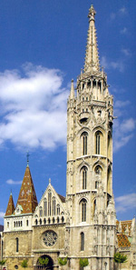

27. Matthias Church

The more than seven hundred years old church, popularly known as Matthias Church, is the most beautiful historical monument of the Castle District and an outstanding example of Hungarian sacred architecture.
It was after the ravaging invasion of the Mongol hordes in 1240-41 that Béla IV. King of Hungary, decided to move his royal seat to Buda. He gave orders for the erection of a fortified royal castle on the hill, known at that time as the New Hill of Pest. The Church of Our Lady, completed between 1255 and 1269, was likewise founded by him. The church originally served the German population of Buda, while the Hungarians built their house of worship, the Church of Mary Magdalene, at the north end of the hill.
The Church of Our Lady has been exposed to a series of significant alterations in the course of the centuries.
The building, generally known for its beauty, was repeatedly chosen as the scene for important state events and political activities. Thus the coronation of Charles I of Anjou in 1309, and the reception of the Byzantine emperor by Sigismund I of Luxemburg (1387–1437) took place within its walls, just as did both wedding ceremonies of King Matthias Corvinus (1458–1490). Flags and other insignia taken in victorious battles were also kept here. The medieval building was completed with generous help from King Matthias Corvinus at the end of the l5th century. He commissioned the reconstruction of the south tower and the erection of the royal oratory. Hence, the coat of arms with the Corvin raven, today on the wall of the Mary Portal. The popular name of the building, Matthias Church, generally used today, dates back to these times and commemorates the King’s patronage.
The present form of the church and the townscape around it dates back to the end of the l9th century, when the restoration of the history worn building became inevitable. Architect Frigyes Schulek was commissioned with the huge task. In his reconstruction of the Mary Portal, which survived in a relatively good state, missing parts were reconstructed. Thus today genuine Gothic elements of the building mix with reconstructed details. This method was followed, too, when restoring World War damages.
The main façade of the church faces Szentháromság (Trinity) Square. On either side of its splayed decorated entrance, there stands the bulky Béla Tower (named after King Béla IV) and the 72 m tall, elegant Matthias Tower. The gable with the large rose window in the middle is vertically stressed by the bar tracery of the windows. The original bulk of the tower (three-story elevation over an octagonal layout) was crowned by Schulek with an extra level decorated with lace-like stonework and a magnificent stone spire.
Thanks to its excellent acoustics, concerts are also frequent held in the church. On Sunday, 10 o’clock Mass is celebrated with the assistance of the orchestra and the choir of the church.